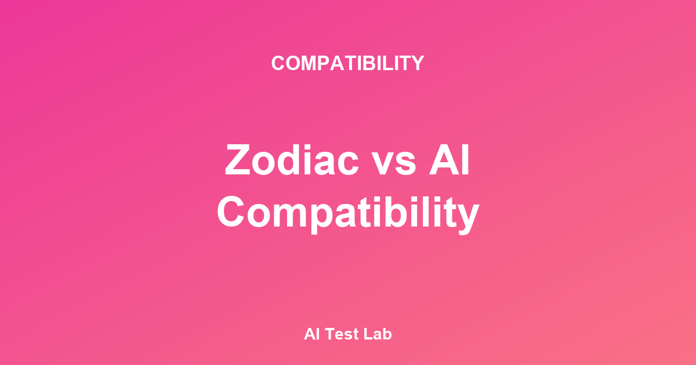

星座で見る相性とAIで分析する相性。この二つはどう違うのでしょうか？どちらが自分の関係をより正確に説明してくれるのでしょうか？この疑問に答えるために、心理学と認知科学の観点から両者を比較してみました。
1. 星座占いの相性：なぜこれほど多くの人が信じるのか？
世界中で何億もの人々が星座を調べ、星座の相性を確認します。科学的に検証されていないにもかかわらず、この人気が続く理由は何でしょうか？
バーナム効果（Barnum Effect）の役割
星座の説明の多くは、幅広く当てはまる一般的な特性を含んでいます。「魚座は感受性が豊かで創造的だ」という説明は、多くの人に「そう、まさに私のことだ！」という反応を引き出します。この現象はForer（1949）が発見したバーナム効果で説明されます。
星座占いの科学的検証
Shawn Carlson（1985）は二重盲検（double-blind）実験において、占星術師たちが生年月日情報だけで個人の性格や人生を有意に予測することはできないことを示しました。大規模な研究でも、星座と実際の性格特性の間に有意な相関関係は見つかっていません。出典: Carlson, S. (1985). A double-blind test of astrology. Nature, 318, 419-425.
それでも星座占いが人気の理由
- 不確実性の軽減：複雑な人間関係をシンプルな枠組みで理解したいという欲求
- 社会的なつながり：「私は魚座だけど、あなたは？」— 会話のきっかけとして機能する
- 自己アイデンティティ：星座が自分の一部となるアイデンティティの表現
- バーナム効果：曖昧な説明が自分にぴったり当てはまると感じさせる心理
2. AI相性診断：何が違うのか？
AIによる相性診断は、生年月日ではなく実際の行動・性格特性・価値観・コミュニケーションスタイルなどをもとに分析します。これは科学的な性格心理学、とりわけビッグファイブモデルや愛着理論など、数十年にわたり検証されてきた心理学的原理を基盤としています。
星座占いの相性
- 生年月日ベース
- 固定された12タイプ
- 科学的根拠なし
- 手軽で素早いアクセス
- 文化的に共有しやすい
- バーナム効果を活用
AI相性診断
- 行動・性格ベース
- 個人に合わせた分析
- 心理学原理に基づく
- より多くの情報が必要
- 結果の理解が必要
- 自己内省を促す
3. 両者の共通点：自己理解のツール
興味深いことに、両者が共通して提供する価値があります。それは自己理解と関係探求のための枠組みを与えてくれるという点です。
星座を信じるかどうかにかかわらず、「私は天秤座だからバランスを大切にする」という自己叙述は、実際にその人のアイデンティティや行動に影響を与えることがあります。心理学ではこれを自己成就予言（Self-Fulfilling Prophecy）と呼びます。
同様に、AI相性診断の結果が「私たちはコミュニケーションスタイルが違う」という認識をもたらすと、実際にコミュニケーション改善に向けて努力するきっかけになります。
自己理解ツールとしての活用
星座でもAI分析でも、どんな自己理解ツールであれ、次の問いを投げかけてくれるなら価値があります：「私はどんな人間か？」「パートナーと私はどう違うか？」「二人の関係で何を改善できるか？」
4. 星座占いの現実的なリスク
星座占いは楽しいツールになりえますが、注意が必要な場面もあります。
注意すべき点
- 「星座が合わないから」という理由で、良い関係を諦めたりチャンスを逃したりしないでください
- 衝突の原因を星座のせいだけにすると、実質的な解決が難しくなります
- 相手を星座タイプだけで固定化することは、個人の複雑さを無視することになります
- 重要な決断（結婚、別れ）を星座だけで下さないでください
5. AI分析の限界
AI相性診断も完璧ではありません。いくつかの重要な限界を認識しておく必要があります。
- 自己報告バイアス：テスト時の回答が、実際の行動よりも自分がなりたい姿を反映している場合があります
- 状況の重要性：性格は状況によって異なる形で発揮されます。AIがすべての状況を網羅することはできません
- 関係のダイナミクス：二人の関係は固定された性格スコアの組み合わせ以上のものです
- 文化的文脈：性格の表れ方は文化によって異なります
6. 両者をどう活用するか
最も賢明なアプローチは、両者を相互補完的に活用することです。星座占いは気軽に楽しめる文化的な言語として、AI分析は自己理解と関係の内省のためのツールとして活用できます。
実用的な活用ガイド
- カフェでの会話：星座占いは自然なアイスブレーキングツールとして活用
- 深い自己内省：AI性格・相性分析で自分と関係を具体的に探る
- 関係の改善：分析結果をもとにパートナーと率直な対話をする
- 判断基準：どちらも決定的な判断基準ではなく、探索のツールとしてのみ使用
7. 占星術の天体物理学的根拠 — 何が検証されているのか
星座占いの相性を批判的に見るとき、最も本質的な問いは「星や惑星の位置が人間の性格に因果的な影響を与えるのか」ということです。この問いに対して科学界が到達した合意は明確です — そのような因果関係の証拠は見つかっていません。
最も頻繁に引用される検証研究はCarlson（1985）の二重盲検実験です。この研究では、28名の占星術師が同一の出生時刻・場所情報を受け取り、それぞれの性格プロファイルを作成しました。結果として、占星術師が作成したプロファイルはランダムな推測より有意に正確ではありませんでした。この実験は、占星術が科学的仮説として検証可能であること、そしてその仮説が検証をパスしなかったことを示す代表的な事例として残っています。出典: Carlson, S. (1985). A double-blind test of astrology. Nature, 318, 419-425.
また、Hartmann, Reuter, & Nyborg（2006）は約4,000人の生年月日と性格・知能検査結果を分析し、誕生時期と性格・知能の間に意味のある関係を見つけられませんでした。出典: Hartmann, P., Reuter, M., & Nyborg, H. (2006). The relationship between date of birth and individual differences in personality and general intelligence: A large-scale study. Personality and Individual Differences, 40(7), 1349-1362.
だからといって、星座占いを楽しむこと自体が間違っているわけではありません。次のセクションでは、星座・MBTI・血液型のような分類システムがなぜ社会的に人気を集めるのかを、別の視点で見ていきます。
8. 文化比較：星座・MBTI・血液型の社会的機能
欧米では星座占いが最もなじみ深い分類システムであり、韓国ではMBTIが近年の日常会話の定番トピックとして定着し、日本では血液型性格論が長年にわたって親しまれてきました。この三つは科学的根拠の強さは異なりますが、社会的機能は驚くほど似ています。
- 会話の媒介：初対面の人とすばやく親近感を築ける安全な話題 — 「血液型は何ですか？」は日本では自己紹介の一部になっています。
- アイデンティティの表現：自分がどんな人間かを短く表現できる「ラベル」。ラベル自体が真実を反映していなくても、ラベルが生み出す自己表現の行為は心理的に意味を持ちます。
- 関係解釈のフレーム：衝突を人格攻撃ではなく「スタイルの違い」として解釈させてくれる防衛的フレーム。「あの人はB型だから」という表現は非難を和らげる社会的潤滑油の役割を果たします。
ただし、社会的機能が有用だからといって、分類システムの科学的正確さが証明されるわけではありません。文化的な人気と科学的妥当性は別次元の問いであり、両者を切り分けて評価することが批判的思考の出発点です。
9. 健全な懐疑主義 — 楽しみながら振り回されない方法
あるツールを楽しみながらもそれに振り回されないためには、次の三つの習慣が役立ちます。
- 「外れることもある」という可能性を常に開いておく：結果が非常に正確に感じられるときこそ、バーナム効果を疑ってみるべき瞬間です。
- 結果を決定的な判断基準にしない：「星座が合わないから別れた」や「MBTIが違うから付き合わない」という決断は、分類システムが担いきれない重みです。
- 時間をおいて再度測定してみる：時間が経ってから同じテストをもう一度受けると、その間に自分がどれだけ変化したか、または結果がどれだけ一貫しているかを直接確認できます。
よくある質問（FAQ）
Q1. 星座占いの相性が科学的に否定されているのに、なぜ当たると感じるのでしょうか？
主な理由はバーナム効果と確証バイアスです。占星術の解釈はほとんどが曖昧で一般的なため、誰にでもある程度は当てはまります。また私たちは当たった部分をよく覚え、外れた部分は忘れる傾向があります。この二つの効果が組み合わさって「不思議なほど当たる」という印象を生み出すのです。
Q2. AI相性診断は100%正確なのでしょうか？
いいえ。AI分析は自己報告された性格・価値観の情報を学習済みパターンと照合し、相性の領域を推定します。アルゴリズム自体に学習データのバイアスが含まれている可能性があり、結果はあくまでも可能性の推定であって、確定的な判断ではありません。AI Test Labでも結果を「探索のための出発点」としてご案内しています。
Q3. では、どの方法を使えばよいのでしょうか？
関係の核心的な問い — 「私たちは日々の衝突をどう乗り越えているか、お互いをどれだけよく知っているか、一緒に描く未来に合意しているか」 — への答えは、結局のところ日常の対話と行動の中から生まれます。星座でもAIでも、この対話を始めるきっかけのツールとして使うときに最も大きな価値があります。
まとめ
星座占いの相性とAI相性診断のどちらが「より正確か」を問うなら、科学的根拠の面ではAIベースの性格分析のほうがはるかに確かな基盤を持っています。しかし、どちらも「完璧な相性予測機」ではありません。
どのツールを使うにしても、大切なのはそれが自分とパートナーをより深く理解するための対話と内省のきっかけになるかどうかです。生まれた星の下よりも、毎日互いにどう接するかが関係を決めるのです。
星座占いの代わりに心理学で測ってみましょう
星座占いの相性の限界を本文で確認したなら、Gottman研究所のネガティブパターンとビッグファイブ性格マッチングが反映されたAI相性診断で、同じ疑問に学術的な答えを試みてみてください。